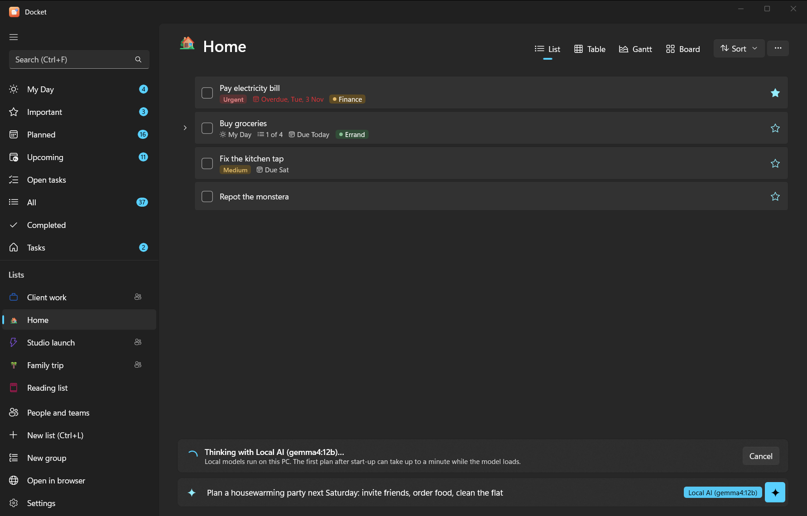
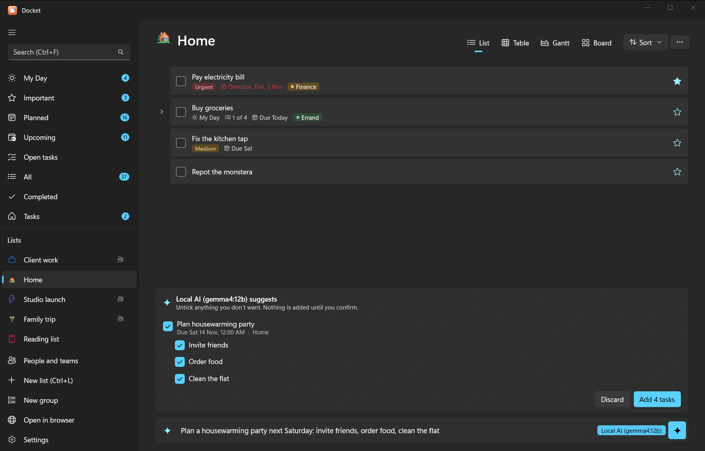

Use Docket
AI planning in the app
Describe what you need in plain words, and Docket's AI turns it into tasks, with subtasks, dates and priorities. You see the whole plan first; nothing is added until you confirm it.


This is the AI inside the Docket apps. To let an assistant like Claude or ChatGPT work on your tasks from its own app, see AI assistants instead.
#Use it
- In the add bar, type
/aiand what you need, for example/ai plan the product launch next week: venue, invites, press kit. - Or turn on the sparkle button in the add bar, and just type.
- Or from the command line:
docket ai "plan the launch next week"shows the plan; run it again with--yesto add it.
The AI keeps your own words and names, only sets dates you gave or clearly implied, breaks big jobs into subtasks, and can put things in My Day or mark them important. You can paste a messy list or meeting notes too.
#Choose an AI
Open Settings > AI and pick a provider:
| Provider | What you need | Where your text goes |
|---|---|---|
| Local | Ollama on your PC and a downloaded model | Nowhere: it stays on your PC |
| Claude | An API key from console.anthropic.com | Anthropic |
| ChatGPT | An API key from platform.openai.com | OpenAI |
| Gemini | An API key from aistudio.google.com | |
| Off | Nothing | The add bar adds tasks exactly as typed |
Then choose Test: plan "Buy milk tomorrow" to check it works.
API keys are stored encrypted for your Windows account (on Android, in the system's secure storage) and only ever sent to that provider. API use is billed by the provider, separately from any Claude or ChatGPT subscription; a planning request is small.
#Default models
| Provider | Default model | Change it |
|---|---|---|
| Local (Ollama) | qwen2.5:7b, or another chat model you have installed | Pick from the Model list |
| Claude | claude-haiku-5-5 | Type another model name in Model |
| ChatGPT | gpt-4.1-mini | Same |
| Gemini | gemini-2.5-flash | Same |
#Set up local AI with Ollama
Local AI is free and private, but needs a reasonably capable PC: a 7–8B model wants about 8 GB of free memory, and runs much faster with a recent graphics card.
- In Settings > AI, choose Local. Docket checks for Ollama.
- If it says Ollama isn't installed, choose Install Ollama. Docket installs it for your account with the Windows Package Manager (winget); a window shows the progress. You can also install it yourself from ollama.com.
- If it says Ollama is installed but not running, choose Start Ollama (it then runs from the system tray).
- When it says Local AI is running but no model is installed, type a model name (the box suggests
qwen2.5:7b) and choose Download model. It's several GB and stays on your PC. - Choose the model in the Model list, then Test.
The first answer after starting can take up to a minute while the model loads. Good small models for planning:
qwen2.5:7b, qwen3:8b, llama3.1:8b. Very small models (under about 4B) make messier plans.
From a terminal, the same is winget install Ollama.Ollama and ollama pull qwen2.5:7b.
#On Android
The phone uses the same choices. Local AI on your PC reaches Ollama over your network, by default at your Docket server's address on port 11434 (you can change it in Settings > AI). For that to work:
- Make Ollama listen on the network, not only on the PC: set the Windows environment variable
OLLAMA_HOSTto0.0.0.0(Settings > System > About > Advanced system settings > Environment Variables), then quit and restart Ollama from the tray. - If Windows Firewall asks, allow Ollama on private networks.
- With Tailscale, the phone reaches the PC at its Tailscale name, so the default address works.
Warning
OLLAMA_HOST=0.0.0.0 lets other devices on your network use Ollama. That's fine at home or on Tailscale; don't
do it on public Wi-Fi.